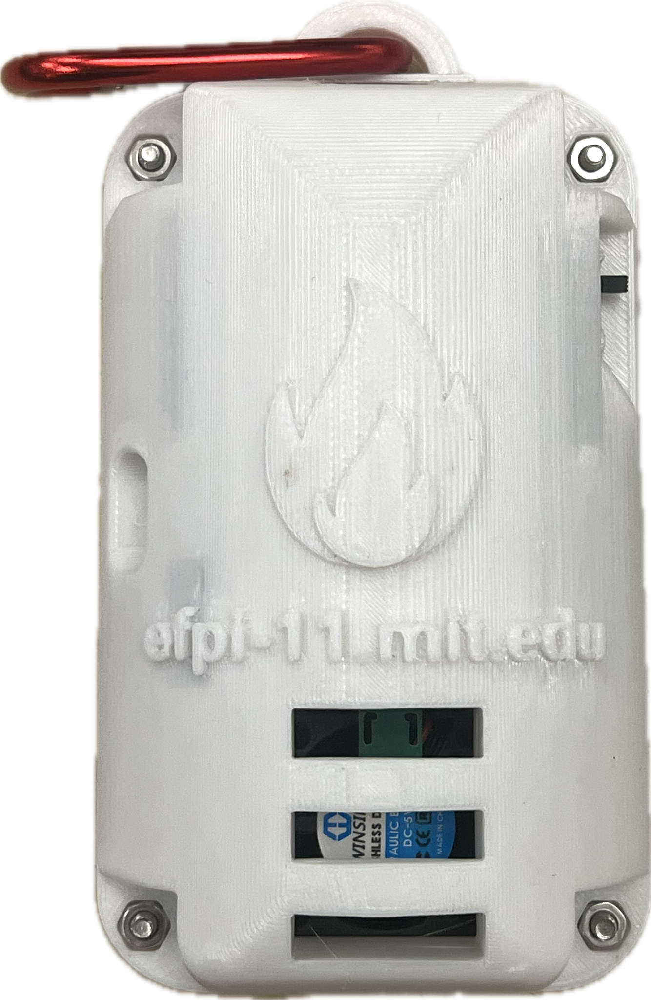
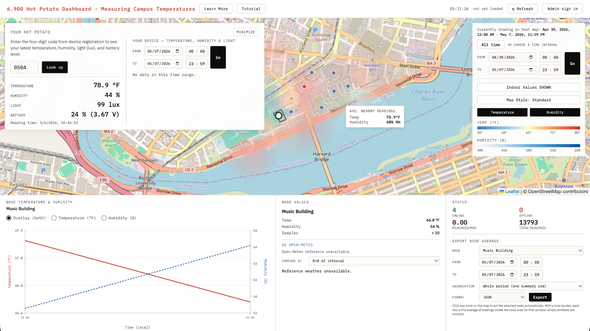
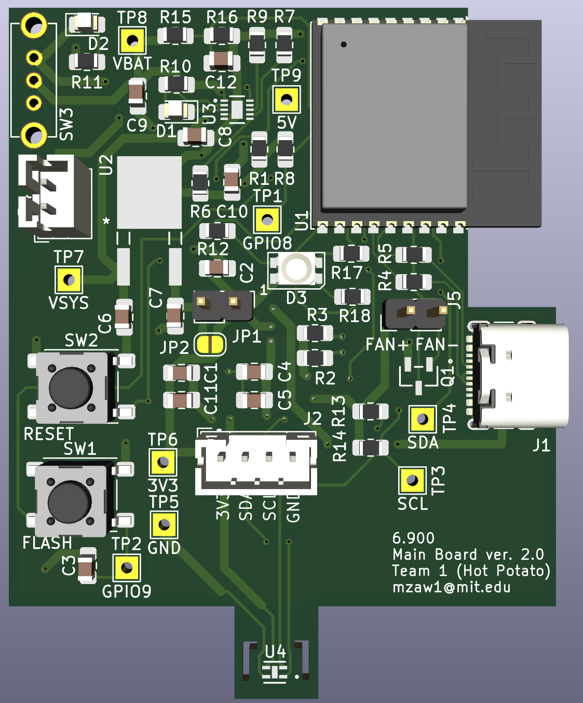
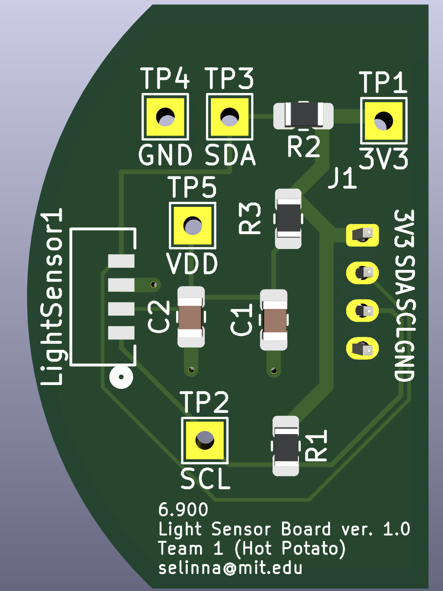
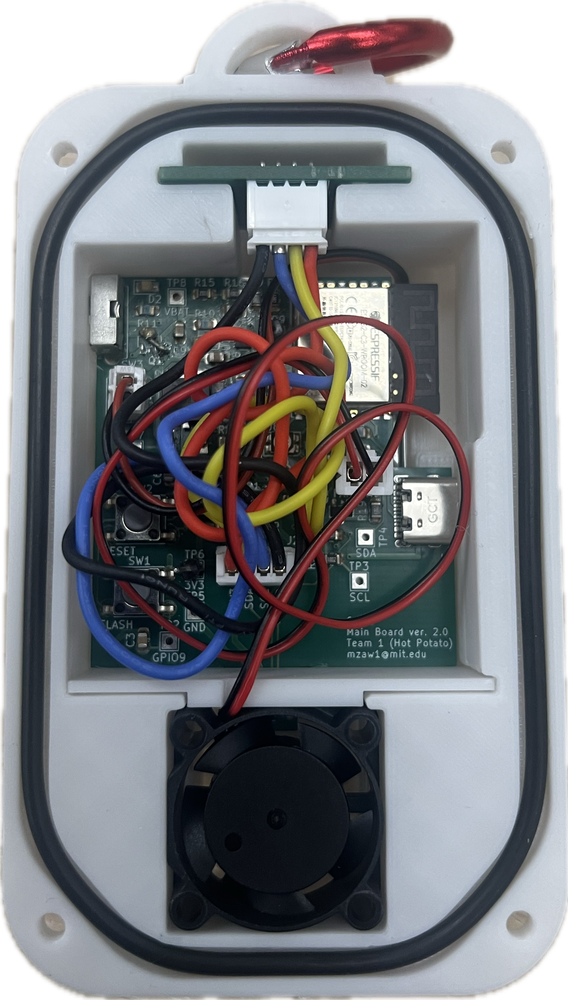
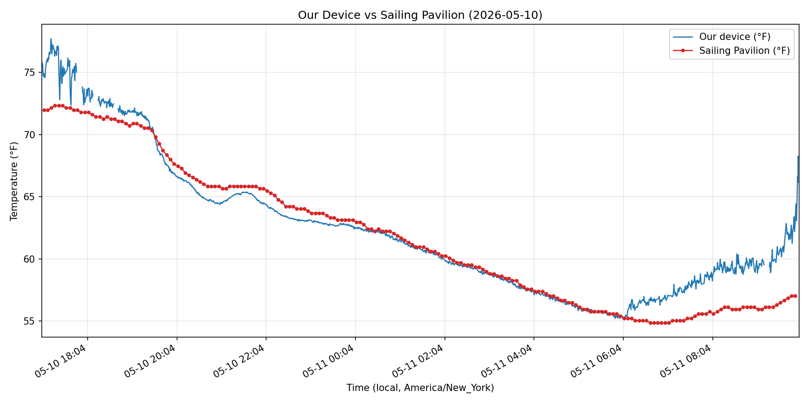
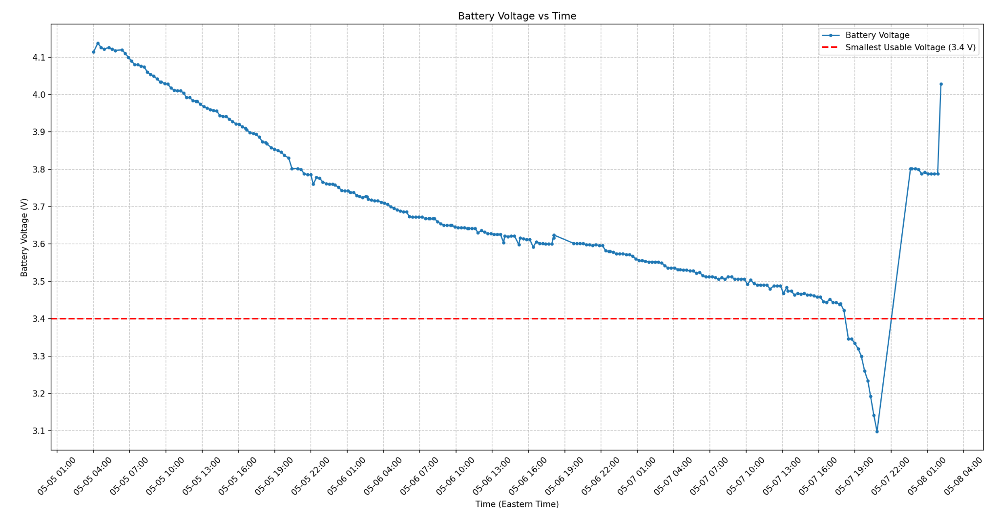

Overview
The MIT Office of Sustainability (MITOS) wanted a scalable way to measure how temperature and humidity vary across campus from the perspective of people moving through it. Existing weather stations provided only limited coverage and could not capture the highly localized conditions experienced along different walking routes, and so they wanted a wearable device that could provide them the data they needed. Our team developed a low-cost personal heat monitor that attaches to a backpack and continuously records temperature, humidity, and light exposure. Using MIT WiFi for geolocation and a centralized data pipeline, the system enables a map of campus microclimates and supports data-driven sustainability initiatives.

The live dashboard
The server aggregates readings from many devices into a live, interactive heat map of campus at efpi-11.mit.edu. A public site offers the live map, per-device lookup, and CSV export, plus a password-protected admin portal for registering and managing devices.

Designing the sensor boards
The main board carries an ESP32-C3 module (WiFi, I2C, ADC) with USB-C charging, a battery management circuit, and a 3.3V regulator, exposing an I2C bus for the sensors. The device uses its MAC address as a unique ID.

A separate light-sensor board breaks out the VEML-7700 lux sensor so it can sit behind a window in the enclosure, away from the heat-generating electronics.

Sensor characterization and airflow
One main problem we encountered was the slow rise and fall time in the SHT40 whenever there is a drastic temperature change specifically when moving from inside vs. outside. Hence, we applied: (1) a thermal isolator separates the sensor from the main board, and (2)a small fan pulls outside air across it to increase air flow through the sensor. These changes vastly improved the sensor response time and accuracy.

Validation
We validated field readings against the MIT Sailing Pavilion reference weather station. Our device tracked the reference closely, staying within the ±3 °F accuracy target.

Results
After system optimization, the device lasted 61 hours on a single charge, more than double the 24-hour requirement. The final bill of materials came in at $18.56 per unit, under the $20 cost target, and the device is deployed on campus today.
